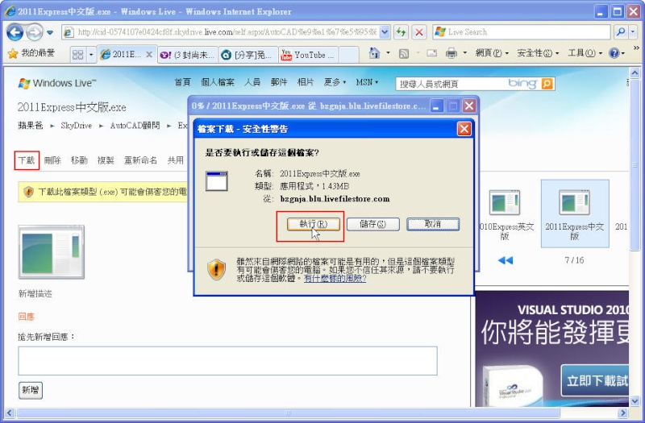

大家好：
有使用過 AutoCAD Express Tools 的朋友應該知道，他是一個非常好用的原廠附贈外掛程式～
但是只有提供英文版介面，現在起可以將它中文化之後，這樣即可使用到更多好用的指令功能！
▼有需要「Express中文化版」的朋友請到以下版區了解：
▼中文版安裝教學影片(安裝前請先關閉AutoCAD)，影片範例為2011版本：
https://www.youtube.com/watch?v=i4GzULte-ho
PS:另外您也可以點選[下載]，然後直接選擇[執行]安裝(不需儲存)。(論壇提供的exe執行檔均無病毒，請安心使用)

目前提供以下版本:
AutoCAD 2006
AutoCAD 2008
AutoCAD 2010
AutoCAD 2011
AutoCAD 2012
AutoCAD 2013
AutoCAD 2014
AutoCAD 2015
AutoCAD 2016
AutoCAD 2017
AutoCAD 2018
AutoCAD 2019
AutoCAD 2020
AutoCAD 2021
AutoCAD 2022
AutoCAD 2023
AutoCAD 2024
AutoCAD 2025
AutoCAD 2026
加入專屬B會員取得Express中文化版
👇加入專屬B會員說明👇
https://www.autocad-tw.com/t2715-topic
加入贊助專屬B付費(點我)